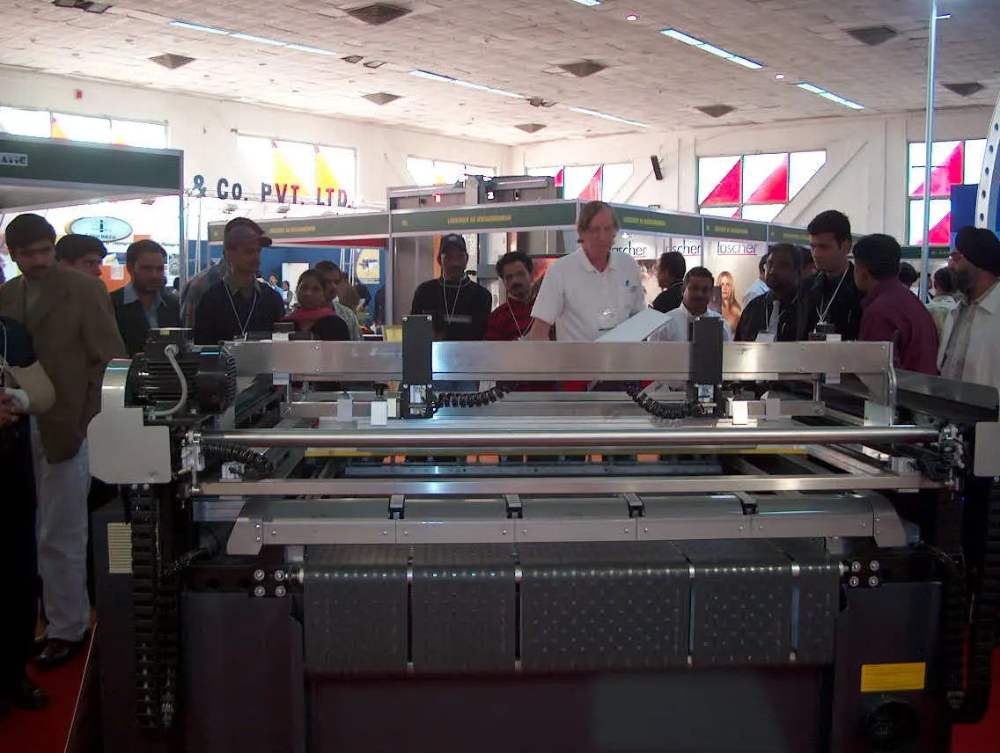
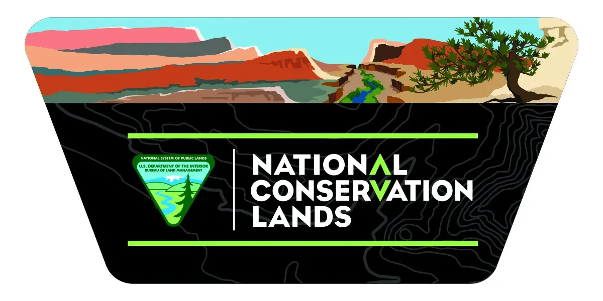
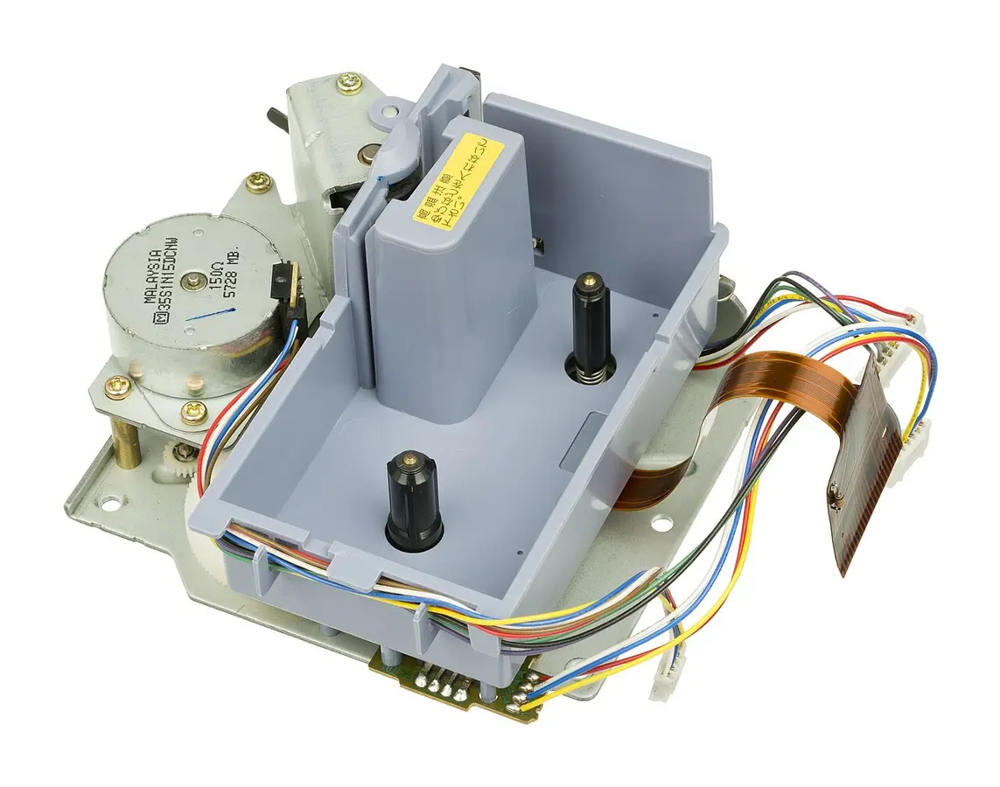

A decade of specialised print work.
INDUSTRIAL PRINT SYSTEMSFARIDABAD · INDIA
Your product
deserves a mark
built to last.
Decals and direct-print systems developed around real surfaces, real exposure and repeatable production.

B / 01
PERFORMS. Representative visual · CC0
B
PRINT THATPERFORMS. Representative visual · CC0
ISO9001:2015
quality system
quality system
Process image used for demo presentation; replace with BALTS-owned factory photography for an official launch.
AUTOMOTIVE✦BICYCLES✦HELMETS✦ELECTRICAL✦TELECOM✦SPORTS GOODS✦
AUTOMOTIVE✦BICYCLES✦HELMETS✦ELECTRICAL✦TELECOM✦SPORTS GOODS✦
01
WHY BALTS
THE GRAPHIC IS NOT AN AFTERTHOUGHT
A logo becomes part of the product only when material, process and control agree.
Founded in 2014, BALTS Global develops water-slide, self-adhesive and heat-transfer decals alongside direct surface printing for product-led industries.
This concept reorganises the company story around the buyer’s real decision: what surface, what exposure, what finish and what production scale?
Figure stated on the current BALTS website.
Figure stated on the current BALTS website.
From salt spray to oils and outdoor exposure.
02
CAPABILITY SYSTEM
CHOOSE BY USE CASE
One print partner.
Four engineered routes.
SELECTED SYSTEM / 01
Water-slide
Thin, conformable decoration engineered for curved, painted and hard-to-reach product surfaces.
- Strong fit
- Bicycles, helmets, automotive parts and premium product decoration
- Process focus
- Application-fit material and finish selection
RegularPeelableEmbossedDay-glowNight-glow
Build a project brief ↗
03
PROCESS / APPLICATION
Real processes.
Purposeful outcomes.
The visuals below are representative public-domain process imagery for this demo. An official site should replace them with BALTS’s own production, QC and application photography.

Consistent identity.Representative public-domain image

in the process.Representative public-domain image
No invented clients, reviews or project outcomes are used in this concept.
Plan the final photography brief ↗04
QUALITY LAB
BUILT FOR THE ENVIRONMENT
The finish is visible.
The testing is the proof.
A resistance plan should reflect the exact product environment. BALTS currently presents checks covering:
Testing names are based on BALTS’s current public website. Project-specific methods, criteria and results must be confirmed directly with the company.
05
SMART ENQUIRY
START WITH WHAT MATTERS
Build a better brief
in under a minute.
06
WORKING METHOD
From product surface
to production standard.
A clear stage-gate process reduces ambiguity and makes sampling more valuable.
Surface brief
Start with the substrate, geometry, finish, exposure and production quantity.
System design
Select the print route, material, ink behaviour and application method.
Sample & validate
Review appearance, adhesion, resistance and repeatability before scale.
Controlled production
Run against an approved standard with clear checkpoints and coordination.
RESPONSIBLE PRODUCTION
Better print systems consider more than appearance.
Material choices
Route material and chemistry decisions through the actual application and compliance need.
Process efficiency
Use approved standards and repeatable production to reduce avoidable waste and rework.
Longer service life
A durable, application-fit graphic can support a product’s useful identity for longer.
This section expresses a design direction for the demo. Final sustainability claims should be supported by BALTS-owned policies, certifications and measured data before official publication.
OFFICIAL WEBSITE LOCATIONFARIDABAD
HARYANA28.4089° N / 77.3178° E
HARYANA28.4089° N / 77.3178° E
07
VISIT BALTS
MANUFACTURING BASE
Built in
Faridabad.
03/02 DC Enclave,Wazirpur Road, Faridabad,
Haryana 121002, India
Location and contact details follow the current official BALTS contact page.
08
BEFORE YOU ENQUIRE
Clear questions.
Useful answers.
Everything a buyer should know before sending the first technical brief.
It depends on the surface, geometry, exposure, finish and volume. The brief builder gives a starting route; BALTS should confirm the final material system after reviewing the actual part.
BALTS presents testing for acid, alkaline, gasoline, engine oil, gear oil, salt spray and outdoor exposure. Exact acceptance criteria should be agreed for each project.
Yes. A professional enquiry should include the artwork, substrate, dimensions, finish, expected environment and approximate quantity so sampling can be scoped correctly.
The current company website lists applications across bicycles, helmets, automotive, electrical, telecom, sports goods and other product-led categories.
No. This is a clearly labelled sales-demo concept created by TEL — Tech for Easy Life. Company facts and contact information are based on the current public BALTS website.
READY WHEN THE SURFACE IS
Bring the part.
Build the right mark.
Share the surface, dimensions, artwork, environment and approximate volume. The first conversation becomes much more useful.